광학기사 (2010-07-25 기출문제)
1과목: 기하광학 및 광학기기
1. 다음 중 렌즈의 초점을 구하는 방법이 아닌 것은?
- 아베(Abbe) 방법
- 노달 슬라이드법
- 자동시준화 방법
- 푸리에(Fourier)방법
(정답률: 48%)

2. 두꺼운 양면 볼록렌즈의 곡률반경이 각각 8㎝, -5㎝이고 가운데 두께가 1㎝, 굴절률이 1.6 일 때 이 렌즈계의 초점거리는 약 얼마인가?
- 3.34㎝
- 4.26㎝
- 5.28㎝
- 6.36㎝
(정답률: 57%)
3. 초점거리가 각각 10㎝인 볼록렌즈와 오목렌즈를 동일 광축위에 나란히 놓아 1개의 새로운 렌즈를 만든다면 새로운 렌즈의 유효초점거리와 렌즈의 종류는? (단, 두 렌즈 사이의 간격은 2.5㎝이다.)
- 25㎝, 볼록렌즈
- 25㎝, 오목렌즈
- 40㎝, 볼록렌즈
- 40㎝, 오목렌즈
(정답률: 32%)
4. “페쯔발 조건(Petzval Condition)"은 어떤 수차를 제거하기 위한 것인가?
- 코마
- 구면수차
- 색수차
- 상면만곡
(정답률: 48%)
5. 30mm의 초점거리를 갖는 양면 볼록렌즈(Biconvex)를 굴절률이 1.5인 유리로 제작하려고 한다. 한쪽면의 곡률반경 R2를 다른 면의 곡률반경 R1의 3배가 되도록 하려고 한다면 곡률반경 R1은 얼마가 되어야 하는가?
- 5mm
- 10mm
- 15mm
- 20mm
(정답률: 34%)
6. 정상적인 사람의 눈에 관한 설명으로 옳지 않은 것은?
- 눈의 원점은 무한대이다.
- 눈의 근점은 약 2㎝이다.
- 망막에 맺히는 상은 도립실상이다.
- 정상적인 사람의 명시거리는 약 25㎝이다.
(정답률: 43%)
7. 굴절률이 1.52인 유리판으로부터 굴절류링 1.38인 박막으로 빛이 입사할 때 전반사 임계각은 약 얼마인가?
- 41.2°
- 46.4°
- 56.2°
- 65.2°
(정답률: 45%)
8. 같은 유리로 만든 초점거리가 각각 f1, f2인 2개의 렌즈를 이용하여 색수차를 제거하고자 한다. 이때 두 렌즈의 간격은 얼마인가?
- f1+f2/2
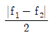
- f1+f2
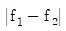
(정답률: 48%)
9. 높이 5㎝인 용기에 소금물이 담겨 있다. 굴절률은 꼭대기에서 1.4, 바닥에서 1.6이다. 용기의 중간 높이에 평행으로 입사한 광선은 용기를 지나는 동안 편향되는데 이 편향된 광선의 곡률반경은 얼마인가?
- 12㎝
- 18㎝
- 25㎝
- 38㎝
(정답률: 23%)
10. 명시거리가 20㎝인 사람이 초점거리 4㎝인 볼록렌즈를 돋보기로 사용할 때 이 돋보기의 배율은 얼마인가?
- 2배
- 4배
- 5배
- 6배
(정답률: 19%)
11. 애플레넷(Aplanat)이란 어떤 수차가 제거된 광학계를 의미하는가?
- 구면수차와 코마
- 색수차와 비점수차
- 왜곡수차와 코마
- 비점수차와 구면수차
(정답률: 42%)
12. 어떤 카메라의 셔터속도를 1/400초, 조리개는 2로 하였더니 노출량이 적당하였다. 조리개를 4로 변화 시키면서 동일한 노출량을 유지하려면 셔터속도는 얼마가 되어야 하는가?
- 1/6000초
- 1/800초
- 1/200초
- 1/100초
(정답률: 44%)
13. 배율이 5인 천체망원경의 두 렌즈가 30㎝ 떨어져 있을 때 대물렌즈와 대안렌즈의 초점거리는 각각 몇 ㎝인가?
- 대물렌즈 5㎝, 대안렌즈 25㎝
- 대물렌즈 5㎝, 대안렌즈 30㎝
- 대물렌즈 25㎝, 대안렌즈 5㎝
- 대물렌즈 30㎝, 대안렌즈 5㎝
(정답률: 40%)
14. 코어의 굴절률이 1.63, 클래딩의 굴절률이 1.52인 계단형 광섬유에서 수용각(Acceptance Angle)은 약 얼마인가?
- 32°
- 34°
- 37°
- 45°
(정답률: 22%)
15. 초점거리 5㎝인 볼록렌즈 후방 2㎝인 곳에 초점거리 -10㎝인 오목렌즈가 배열된 렌즈계에서 볼록렌즈의 전방 20㎝인 지점에 물체가 놓여 있다. 두 렌즈의 직경이 서로 같다고 할 때, 입사창(entrance window)의 위치는?
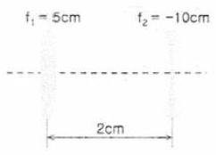
- 볼록렌즈 전방 3.33㎝
- 오목렌즈 전방 1.67㎝
- 볼록렌즈 후방 3.33㎝
- 오목렌즈 후방 1.67㎝
(정답률: 34%)
16. 두께 12mm인 유리로 만든 어항에 물이 높이 24mm 만큼 담겨 있다. 어항이 마룻바닥에 놓여 있을 때 수면 위에서 수직으로 바닥을 내려다보면, 마룻바닥은 수면으로부터 얼마의 깊이로 보이는가? (단, 유리와 물의 굴절률은 각각 3/2, 4/3 이다.)
- 18mm
- 26mm
- 36mm
- 50mm
(정답률: 39%)
17. 빛의 파장에 따라 렌즈를 통과한 광선의 굴절각이 다르기 때문에 일어나는 수차는?
- 코마
- 구면수차
- 색수차
- 비점수차
(정답률: 58%)
18. 스펙트럼 C선과 F선의 사이에서 플린트 유리의 아베수는 약 얼마인가? (단, 스펙트럼 C, D, F선에 대한 이 유리의 굴절 률은 각각 nC=1.571, nD=1.575, nF=1.585 이다.)
- 4.107
- 28.41
- 41.07
- 69.93
(정답률: 47%)
19. 다음 중 렌즈의 특이점(cardinal point)이 아닌 것은?
- 절점(nodal point)
- 정점(vertex point)
- 광심(optical center)
- 주요점(principal point)
(정답률: 43%)
20. 초점거리가 10㎝인 볼록렌즈의 좌측전방 5㎝인 곳에 물체가 놓여 있다. 상의 위치와 종류를 바르게 기술한 것은?
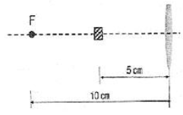
- 렌즈의 좌측 10㎝ 인 곳에 정립허상이 생긴다.
- 렌즈의 우측 10㎝ 인 곳에 도립실상이 생긴다.
- 렌즈의 좌측 3.3㎝ 인 곳에 정립실상이 생긴다.
- 렌즈의 우측 3.3㎝ 인 곳에 도립실상이 생긴다.
(정답률: 34%)
2과목: 파동광학
21. 그림과 같은 삼각형의 프리즘에 빨강, 노랑, 파랑의 빛을 똑같이 입사시킬 때, 프리즘을 통과한 색의 배열이 옳은 것은?
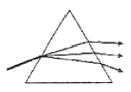
- 아래는 빨강, 중간은 노랑, 위는 파랑
- 아래는 빨강, 중간은 파랑, 위는 노랑
- 아래는 노랑, 중간은 파랑, 위는 빨강
- 아래는 파랑, 중간은 노랑, 위는 빨강
(정답률: 45%)
22. 다음 중 광섬유 내부에서의 길이에 따른 광손실을 계산하는데 사용되는 식은? (단, 길이 ℓ1에서의 빛의 세기는 I1, ℓ2에서의 빛의 세기는 I2이며, ℓ1＜ ℓ2 이다.)
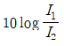
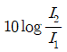
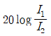
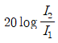
(정답률: 30%)
23. 선형편광기 P1을 이용하여 무편광된 빛을 4W/m2의 복사조도를 갖는 선형편광된 빛으로 만들었다. 이 선형편광된 빛을 선형편광기 P1의 선형편광방향과 30°의 각도로 선형편광방향이 어긋나게 배치한 또 다른 선형편광기 P2를 통과시킨다면 이 빛의 복사조도는 얼마가 되는가?
- 1W/m2
- 2W/m2
- 3W/m2
- 4W/m2
(정답률: 42%)
24. 대물경 지름이 1.0m인 반사망원경으로 밤하늘에 보이는 별이 이중성(double star)인지 아닌지를 밝혀내려 한다. 사용하는 빛의 파장이 5,000Å 이라면 이 망원경으로 식별할 수 있는 연성의 최소 각분리도(θ)는 약 얼마인가? (단, 망원경의 수차와 대기 운동에 의한 상의 흐려짐은 없다고 가정한다.)
- 2.0 × 10-10radian
- 3.0 × 10-8radian
- 5.1 × 10-8radian
- 6.1 × 10-7radian
(정답률: 24%)
25. 영의 이중슬릿 실험에서 멀리 떨어져 있는 파장 600㎚의 가간섭성 점광원을 슬릿 간격 0.2mm인 이중슬릿에 비추어 이 슬릿으로부터 2m 떨어진 스크린에서 간섭무늬를 관찰하였다. 가장 밝은 무늬로부터 첫 번째 어두운 무늬가 생기는 위치는 중앙에서 얼마나 떨어져 있는가?
- 3mm
- 5mm
- 30mm
- 50mm
(정답률: 28%)
26. 굴절률이 n인 비누막이 공기 중에 놓여 있다. 파장 λ인 광파가 수직으로 입사하여 비누막의 윗면과 아랫면에서 반사하였다. 이 두 반사광이 보강간섭을 일으키기 위한 비누막의 광학적 두께는 얼마인가? (단, 공기의 굴절률은 n보다 작으며, 비누막의 아랫면도 공기와 접하고 있다고 가정한다.)
- λ/8
- λ/4
- λ/2
- λ
(정답률: 44%)
27. 2개의 슬릿에 0.2mm 떨어져 있고 1m 거리에 스크린이 있을 때 세 번째 무늬가 중앙무늬에서부터 0.75mm 의 거리에 있는 것을 알았다. 이때 사용한 광파의 파장은 얼마인가?
- 50㎚
- 60㎚
- 70㎚
- 80㎚
(정답률: 29%)
28. 공간필터링을 응용하는 한 방법으로 유체역학에 관한 연구에서 널리 사용하고, 탄도학, 항공역학 및 초음파분석에 매우 유용한 방법으로 압력 변화를 굴절률 함수로 보여주는 것은?
- 유형 인식 방법
- 쎄타(theta) 변조 방법
- 슐리렌(Schileren) 방법
- 홀로그램(hologram) 방법
(정답률: 40%)
29. 신문 사진에 나타나 있는 점 배열들을 보이지 않도록 사진을 부드럽게 하려면 어떤 필터를 사용해야 하는가?
- 홀로그램 필터
- 저주파 투과 필터
- 광대역 투과 필터
- 고주파 투과 필터
(정답률: 43%)
30. 패브리-페로 간섭계(Fabry-Perot interfreometer)의 자유 스펙트럼 영역(free spectral range, (△v)FSR이 20㎓, 반사예리도 (reflecting finesse,
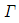
)가 400일 때, 이 간섭계의 분해능폭(△v)은 얼마 인가?- 20㎒
- 50㎒
- 200㎒
- 500㎒
(정답률: 30%)
31. 마이켈슨 간섭계의 광분할기의 반사율이 75%이다. 전반사경 M1, M2에서 반사되어 스크린에 도달한 광파의 진폭을 E1, E2라고 할 때, E1/E2의 크기는 얼마인가? (단, 각각의 경우에서 광속분할기의 이면에서의 반사와 광속분할기와 거울에서의 흡수는 무시한다.)
- 1/9
- 1/3
- 1
- 3
(정답률: 48%)
32. 단축결정인 방해석을 광축에서 45° 기울어진 방향으로 잘라서 연마한 후, 연마된 면에 수직으로 빛을 입사시켰다. 이 때 빛의 경로로 옳은 것은?
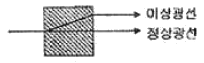
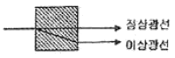
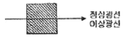
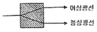
(정답률: 40%)
33. 다음 중 홀로그래피를 기록할 때 이용되는 광원으로 사용되지 않는 것은?
- LED
- 헬륨-네온 레이저
- 아르곤 레이저
- 헬륨-카드뮴 레이저
(정답률: 32%)
34. 어떤 사람의 목소리가 가지는 고유주파수를 판별하는 방법으로 가장 적절한 것은?
- 마이크 사용
- 슐리렌 방법
- 스피커 사용
- 푸리에 변환
(정답률: 25%)
35. 굴절률이 유리 내를 진행하는 광이 공기층과 만나는 경계에서 전반사가 일어날 때 임계각(critical angle, θC)은 얼마인가?
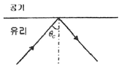
- 26°
- 42°
- 48°
- 53°
(정답률: 43%)
36. 그림은 클래딩으로 된 광섬유 측단면을 나타낸 것이다. 허용각(acceptance angle) α를 표현한 것으로 옳은 것은? (단, 코어와 클래딩의 굴절률은 각각 n1, n2이며, 공기의 굴절률 n0는 1이다.)
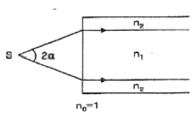
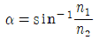
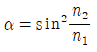
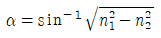
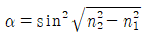
(정답률: 50%)
37. 보이저 탐색선이 보내온 전송사진에 기기의 조정 미비로 인하여 일정한 간격으로 수평줄이 나타났다고 할 때 전체적인 화면의 영상은 크게 상하지 않고, 렌즈의 푸리에 변환(Fourier Transform) 특성을 이용하여 이 선들을 제거할 수 있는 방법으로 옳은 것은?
- 푸리에 변환 면의 중심부 밝기를 증대시킨다.
- 푸리에 변환 면에서 중심부분의 빛을 차단한다.
- 푸리에 변환하면서 렌즈의 중심부를 검게 한다.
- 푸리에 변환 면의 중앙에서 좌우로 일정한 거리를 떨어진 공간주파수 성분을 차단한다.
(정답률: 48%)
38. 다음 중 현미경의 분해능을 결정하는 요소가 아닌 것은?
- 현미경 대물렌즈의 수차
- 시료를 비추는 빛의 파장
- 시료를 비추는 빛의 밝기
- 현미경 대물렌즈의 수치구경(NA)
(정답률: 42%)
39. 다중모드 광섬유의 분산에 있어서 가장 큰 비율을 차지하는 분산은?
- 모드 분산
- 구조 분산
- 재료 분산
- 스펙트럼 분산
(정답률: 37%)
40. 정상굴절률 1.658이고 이상굴절률 1.486인 방해석으로 진공에서 파장 600㎚에서 사용할 1/4 파장판을 만든다면 가장 얇은 1/4 파장판의 두께는 약 얼마인가?
- 0.45㎛
- 0.90㎛
- 1.80㎛
- 2.70㎛
(정답률: 30%)
3과목: 광학계측과 광학평가
41. 카메라와 현미경의 상에 관한 설명이 옳은 것은?
- 카메라는 실물보다 작은 도립실상이, 현미경에는 실물보다 큰 도립허상이 맺힌다.
- 카메라는 실물보다 작은 정립허상이, 현미경에는 실물보다 큰 도립실상이 맺힌다.
- 카메라는 실물보다 작은 정립실상이, 현미경에는 실물보다 큰 정립허상이 맺힌다.
- 카메라는 실물보다 큰 도립실상이, 현미경에는 실물보다 작은 정립허상이 맺힌다.
(정답률: 42%)
42. 다음 중 광섬유 위상 센서가 아닌 것은?
- 샥냑(Sagnac) 간섭 센서
- 마하-젠더(Mach-Zender) 간섭 센서
- 에바네슨트(Evanescent) 간섭 센서
- 패브리-페로(Fabry-Perot)간섭 센서
(정답률: 30%)
43. 크라운계 유리에 산화납의 비율을 증가시킬 때 일어나는 광학적 현상으로 옳은 것은?
- 굴절률은 증가하고, 아베수도 증가한다.
- 굴절률은 증가하고, 아베수는 감소한다.
- 굴절률은 감소하고, 아베수는 증가한다.
- 굴절률은 감소하고, 아베수도 감소한다.
(정답률: 25%)
44. 다음 광학물질 중 모스경도가 가장 높은 물질은?
- 수정
- 방해석
- 장석
- 다이아몬드
(정답률: 36%)
45. 광학계의 시야에 관한 설명으로 옳지 않은 것은?
- 평면거울은 거울자체가 시야조리개이다.
- 평면거울에서는 물체시야에 비해 상시야가 적다.
- 볼록거울은 적은 상시야로 많은 물체시야를 확보한다.
- 오목거울은 많은 상시야로 적은 물체시야를 확보한다.
(정답률: 30%)
46. 초점거리가 10㎝인 볼록렌즈를 사용하여 렌즈 전방 30㎝ 앞에 위치해 있는 물체를 결상하고자 한다. 렌즈로부터 상이 형성되는 지점까지의 거리는 얼마인가?
- 13㎝
- 15㎝
- 17㎝
- 19㎝
(정답률: 53%)
47. 다음 중 분광광도계(spectrophotometer)를 이용하여 측정할 수 있는 것은?
- 조명도 측정
- 프리즘의 굴절률 측정
- 구면체의 곡률반경 측정
- 시료의 파장별 투과율 측정
(정답률: 39%)
48. 다음 중 주변광선(marginal ray)에 관한 설명으로 옳은 것은?
- 상의 밝기를 결정한다.
- 상의 크기를 결정한다.
- 입사동의 중심을 통과한다.
- 출사동의 중심을 통과한다.
(정답률: 39%)
49. 복사계측학(Radiometry)에서 에너지 전달율인 파워 (power)의 기본 단위인 와트(Watt)에 대응하는 측광학(Photometry)에서의 단위는 무엇인가?
- 럭스(lux)
- 주울(Joule)
- 루멘(lumen)
- 람베르트(lambert)
(정답률: 53%)
50. 유리도표(Glass Chart)에서 529516으로 표시되는 유리가 있다. 이 유리의 황색 및(파장 0.5876㎛)에 대한 굴절률은 얼마인가?
- 1.516
- 1.529
- 1.589
- 1.893
(정답률: 53%)
51. 회절격자를 이용한 분광에 관한 설명으로 옳지 않은 것은?
- 회절차수가 높을수록 분해능이 낮다.
- 0차 회절에서는 분광이 되지 않는다.
- 1차 회절과 -1차 회절에서의 분광 특성은 동일하다.
- 회절격자에 입사되는 빛의 면적이 넓을수록 분해가 잘 된다.
(정답률: 32%)
52. 삼각 프리즘에서 굴절률에 따른 빛의 편향 (deviation)과 분산에 관한 설명으로 옳은 것은?
- 굴절률이 크면 분산이 크다.
- 굴절률이 크면 분산이 작다.
- 굴절률이 크면 많이 편향된다.
- 굴절률이 크면 적게 편향된다.
(정답률: 44%)
53. 그림과 같은 형태의 접안렌즈는 다음 중 어떤 형태에 속하는가?
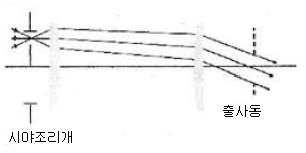
- 에르플 접안렌즈(Erfle eyepiece)
- 람스덴 접안렌즈(Ramsden eyepiece)
- 켈너식 접안렌즈(Kellner eyepiece)
- 오르토스코픽 접안렌즈(Orthoscopic eyepiece)
(정답률: 39%)
54. "Cold mirror"에 관한 설명으로 옳은 것은?
- 내부에 냉각용 설비를 갖춘 거울
- 저온에서 사용하도록 설계된 거울
- 입사광 중 가시광선 부분만 반사하는 거울
- 저온현상을 관찰할 목적으로 사용되는 특수거울
(정답률: 42%)
55. 초점거리 25mm인 대안렌즈의 초점거리 16mm인 대물렌즈로 현미경을 제작하였다. 광학경통의 길이가 160mm라면 이 현미경의 배율은 얼마인가?
- 10
- 100
- 200
- 400
(정답률: 42%)
56. 미국 NASA에서 지구 상공에 설치한 허블(Hubble) 천체 우주망원경에 사용한 망원경으로, 구면수차와 코마의 보정이 어느 정도 가능하며 특히 상면만곡 특성이 우수한 망원경의 형태는?
- 케플러식 망원경
- 그레고리식 망원경
- 갈릴레이식 망원경
- 카세그레인식 망원경
(정답률: 30%)
57. 카메라 렌즈의 f-수(f/#)와 필름의 노출시간(T) 사이의 관계로 옳은 것은?
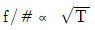
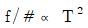
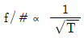
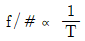
(정답률: 34%)
58. 다음 광학용 플라스틱 재료 중 가시광선의 투명성이 가장 우수한 것은?
- PC
- PS
- PMMA
- CR-39
(정답률: 38%)
59. 진동수가 대략 5.2×1014㎐인 노란빛의 파장과 사람의 머리카락의 굵기(4×10-2mm)를 비교한 설명으로 옳은 것은?
- 노란빛의 파장이 머리카락의 굵기보다 약 35배 더 길다.
- 노란빛의 파장이 머리카락의 굵기보다 약 69배 더 길다.
- 머리카락의 굵기가 노란빛의 파장보다 약 35배 더 굵다.
- 머리카락의 굵기가 노란빛의 파장보다 약 69배 더 굵다.
(정답률: 25%)
60. 다음 중 광학매질의 복굴절성을 이용한 프리즘이 아닌 것은?
- 아베(Abbe) 프리즘
- 로촌(Rochon) 프리즘
- 월라스톤(Wollaston) 프리즘
- 글렌-푸코(Glan-Foucault) 프리즘
(정답률: 37%)
4과목: 레이저 및 광전자
61. 파장이 λ인 레이저의 선폭이 Δλ이고 이 레이저의 가간섭길이(coherence length)가 ℓc일 때, Δλ×ℓc와 같은 양을 표현한 것은?
- 1
- λ
- λ2
- λ3
(정답률: 58%)
62. He-Ne 레이저가 항상 선폭이 1.5㎓인 단일종모드로 발진할 수 있는 가장 긴 공진기 길이는 얼마인가?
- 10㎝
- 15㎝
- 20㎝
- 25㎝
(정답률: 7%)
63. 레이저의 가간섭거리(coherence length)는 자발적 방출에 의한 자연선 천이에 의한 것보다 길게 할 수 있는데, 그 이유로 타당한 것은?
- 레이저 작동시 도플러 효과에 의해 선폭이 줄어들기 때문
- 레이저 작동시 도플러 효과에 의해 선폭이 늘어나기 때문
- 레이저 작동시 레이저 선폭이 자연선폭보다 줄어들기 때문
- 레이저 작동시 레이저 선폭이 자연선폭보다 늘어나기 때문
(정답률: 31%)
64. 편광방향이 서로 수직방향으로 주어진 두 레이저광의 간섭에 관한 설명으로 옳은 것은?
- 간섭을 일으키지 않는다.
- 시간 가간섭성(temporal coherence)이 충분하면 간섭을 일으킨다.
- 공간 가간섭성(spatial coherence)이 충분하면 간섭을 일으킨다.
- 시간 가간섭성, 공간 가간섭성이 모두 충분해야 간섭을 일으킨다.
(정답률: 15%)
65. 임의의
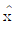
축 방향으로 편광된 빛을 90도 회전된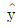
축 방향으로 편광된 빛으로 바꾸기 위해 사용되는 소자는?- 선형편광기(Linear polarizer)
- 반파장판(Half wave plate)
- 1/4파장판(Quarter wave plate)
- Polarization beam splitter
(정답률: 40%)
66. 파장이 각각 1.06㎛, 10.0㎛인 레이저 광을 비선형 단결정을 이용하여 합성할 때 합성된 광의 파장은 약 얼마인가?
- 0.96㎛
- 8.94㎛
- 11.06㎛
- 12.64㎛
(정답률: 42%)
67. 그림과 같이 수직방향으로 편광된 빛이 분극축이 45°로 편광투과방향으로 회전시킨 편광자 (Polat izer)에 입사하면 이 편광자를 통과하는 광량은 입사광량의 몇 % 가 되는가? (단, 편광자는 이상적인 것으로 가정한다.)
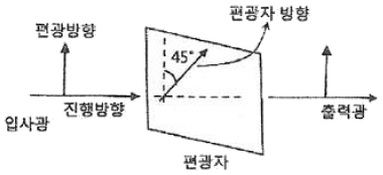
- 0%
- 45%
- 50%
- 100%
(정답률: 36%)
68. 다음 중 결정이 복굴절성을 지니는 물질이 아닌 것은?
- 석영(Quartz)
- 방해석(Calcite)
- 질산나트륨(NaNO3)
- 염화나트륨(NaCl)
(정답률: 19%)
69. 레이저에서 레이저 빔의 편광특성을 높이기 위한 방법으로 옳은 것은?
- 레이저 공진기 내에 프리즘을 삽입한다.
- 레이저 공진기 내에 에탈론을 삽입한다.
- 레이저 공진기의 창을 부르스터 각도로 기울인다.
- 레이저 공진기의 반사경으로 반사율이 아주 높은 것을 사용한다.
(정답률: 42%)
70. CO2 레이저는 레이저 방전관에 N2, He등의 혼합가스를 넣어 레이저를 발진시키는데, 이들 혼합가스 중 He의 역할에 관한 설명으로 가장 적절한 것은?
- CO2 분자의 여기효율을 높여 준다.
- CO2 분자를 선택적으로 상위준위에 여기 시킨다.
- CO2 분자에 충돌에 의한 진동에너지를 부여한다.
- CO2 분자의 완화를 도와 발진효율과 출력을 증가시킨다.
(정답률: 34%)
71. 공기 중에서 레이저 광펄스(시간폭, △t=0 가정)를 목표물에 발사한 후 10㎲ec 가 지나서 반사 광펄스가 도착하였음을 알았다. 이때 목표물까지의 거리는 얼마인가?
- 150m
- 300m
- 1500m
- 3000m
(정답률: 34%)
72. 다음 중 고출력으로서 금속 및 비금속재료의 가공에 널리 쓰이는 것은?
- Ar+ 레이저
- Ruby 레이저
- CO2 레이저
- He-Cd 레이저
(정답률: 53%)
73. 광속 직경이 2mm, 전퍼짐각(full divergence angle)이 △θ인 레이저 광속을 광속확대기를 이용하여 20mm의 직경을 가진 평행한 광속으로 확대하면 이 레이저의 전퍼짐각은 얼마가 되는가?
- △θ/20
- △θ/10
- 10△θ
- 20△θ
(정답률: 42%)
74. 다음 중 화학 레이저에 사용되는 레이저 매질은?
- Ar+
- HF
- GaAs
- R-6G
(정답률: 44%)
75. 시간 및 공간 가간섭성에 관한 설명으로 옳지 않은 것은?
- 복소수 가간섭도의 크기는 간섭무늬의 가시도와 다르다.
- 시간 가간섭성의 척도인 P11(t)는 광파의 가간섭 시간과 주파수 폭의 함수이다.
- 시간 가간섭은 광원의 진동수 폭에 관련되며, 공간 가간섭성은 광원의 크기와 연관된다.
- 가간섭 시간이란 공간상의 한 점에서 광파의 위상이 일정하게 유지되는 시간을 의미한다.
(정답률: 30%)
76. 렌즈를 사용하여 레이저광을 집속하는 경우 집속 광속의 크기와 무관한 것은?
- 입사광속의 직경
- 입사광속의 선폭
- 입사광속의 파장
- 집속렌즈의 초점거리
(정답률: 17%)
77. 다음 중 레이저광의 특성에 해당되지 않는 것은?
- 간섭성이 좋다.
- 단색성이 좋다.
- 지향성이 좋다.
- 편광성이 좋다.
(정답률: 42%)
78. 모드 동기(mode locking)된 어떤 레이저 A에서 나오는 펄스의 시간폭이 TA이고, 스펙트럼의 폭은 △fA이다. 이득 매질이 다른 어떤 레이저 B에서 나오는 펄스의 시간폭은 TB이고, 스펙트럼 폭은 △fB이다. 두 펄스의 시간폭 TA, TB가 모두 푸리에 (Fourier)한계값을 가진다면 두 레이저의 시간폭의 비 TA/TB에 가장 가까운 값은? (단, h는 플랑크 상수이다.)
- △fB/△fA
- h/2
- h△fA/△fB
- hㆍ△fAㆍ△fB
(정답률: 22%)
79. 아날로그 방식에 비한 디지털 광 전송방식의 특성으로 옳지 않은 것은?
- 광원의 전류-출력 특성의 비선형성에 의해 시스템에 미치는 영향이 적다.
- 디지털 전송시스템은 오류검사코드를 사용하여 오류를 최소화 할 수 있다.
- 일반적으로 디지털 시스템은 아날로그 시스템보다 더 좋은 품질의 신호를 얻을 수 있다.
- 아날로그 신호는 중계기에서 쉽게 재구성 할 수 있으나 디지털 신호는 중계기에서 쉽게 재생될 수 없다.
(정답률: 44%)
80. 어떤 결정체의 유전율
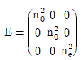
와 같이 표현할 수 있다면 이 결정체는 어떤 결정체인가? (단, n0는 정상굴절률, nc는 비정상굴절률이다.)- 단축결정
- 정방형 결정
- 쌍축결정
- 육각형 결정
(정답률: 43%)